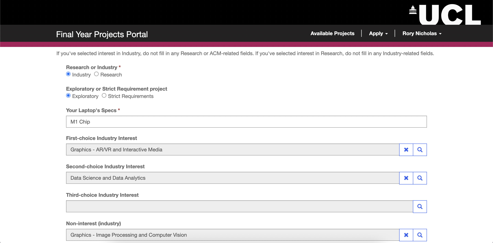
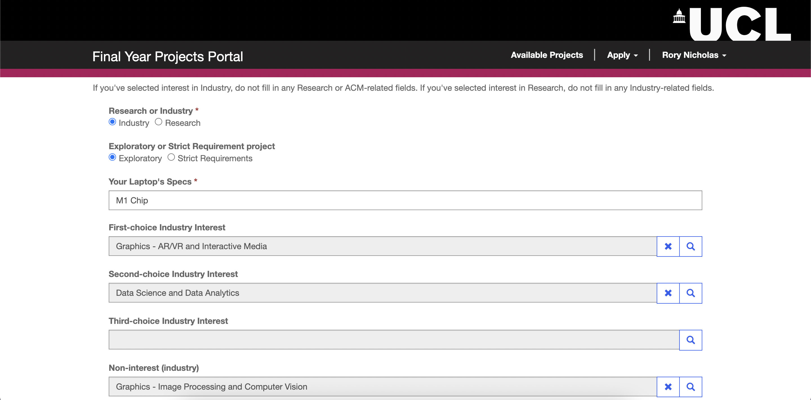

Gantt Chart

Requirements
UCL’s Computer Science department has recently been transitioning several day-to-day activities in the form of business transformation as workflows. In partnership with Microsoft, several tools and systems have been requested across the teaching and learning domains.
The highest burden faced by our client, Dean Mohamedally, is the Final Year Project Supervisor Allocation process which is being done manually. This involves finding a supervisor who would be good a match for each of 160 students in the class, which is a time-consuming process.
The current solution is not fit for purpose and involves multiple stages of spreadsheets, conflicting requests, and lack of timelines.
The process should allow a first-round survey to all final year students, to state their degree level, and whether they intend to do research only, industry only, or don’t know as their profile option.
Visibility of projects is a key ask for the academics - this includes research projects listing, ACM classification keywords of the academics, and visibility of the industry projects lists once they are ready. A solution that enables staff workloads to be input is needed at this point as those academics that have capacity to supervise and are not taken by students for their research projects, should then automatically make themselves available for projects with industry.
The second-round survey is the matching of the students to the research projects. This needs timeframes to be set up that mark key dates: when projects are advertised, when the projects are taken by a student, or if a student is in discussions with an academic for a project. Only once this is facilitated, it will be then signed off as allocated as FYP for Research Academic Projects.
After that stage, or in parallel, for students that have said yes to wanting industry projects on the UCL IXN, they will fill in a separate second round survey, called the UCL Motivation Tracking Survey. This data then profiles capabilities and allows a Teaching and Learning member of the team to import the student grades for the IXN and Strategic Alliance Teams to begin sourcing appropriate projects in those quantities.
By March this data is completed and those who said they did not know will be once again advertised to come forward to choose in a 3rd cycle of survey forms.
Academics need a listing that enables them to see, at a glance, who they are supervising as final year projects are allocated.
-
Easy-to-use interface for staff, students and administrators
-
Bring all steps of the FYP allocation process to one place
-
Store all relevant data in one location
-
Facilitate unsupervised matching
-
Automate supervised matching
At the start of our project, we interviewed 4 students, 2 academics, and the administrator who is overseeing the FYP supervisor allocations this year.
We decided to go with a semi-structured interview as the method of gathering information from would be users. We probed topics such as what they would like to be able to do with a new system and thoughts they had about the current system. We deemed this more appropriate than a questionnaire as people are more reluctant to be thorough and descriptive in questionnaires. We felt that it was also appropriate to ask open interview questions to really understand what the users want.
Below are notable points from answers to the questions we asked.
-
The process struck me as unorganized. I had trouble finding the place to look for the list of supervisors – it turned out it was on the systems engineering Moodle page.
-
I had a difficult time reading through the list of available supervisor options. A code was used to list their ACM keywords, so I had to look up the code every time. I wish it was easier to browse the list of supervisors. Also, my device had a glitch with the file that listed all the ACM keywords, which made browsing more difficult.
-
The process itself was okay, though I would’ve preferred a separate Moodle page for it and an email that would notify everyone simply about the deadlines.

-
It would be great to have everything happen through one medium. I managed it this year, but it would’ve obviously been easier and cleaner if everything went through a single medium, rather than many strewn forms. I suspect the process would’ve been more on-schedule as well if the administrators didn’t have to manage all these forms and mediums of communication.
-
If possible, that sounds great! But it should certainly be linked with UCL so I don’t have to remember more credentials. I also want it to be easily memorable and accessible so I don’t keep forgetting what the website’s called or where to find the link.
-
It would be great to have everything happen through one medium. I managed it this year, but it would’ve obviously been easier and cleaner if everything went through a single medium, rather than many strewn forms. I suspect the process would’ve been more on-schedule as well if the administrators didn’t have to manage all these forms and mediums of communication.
-
If possible, that sounds great! But it should certainly be linked with UCL so I don’t have to remember more credentials. I also want it to be easily memorable and accessible so I don’t keep forgetting what the website’s called or where to find the link.
-
On average, I have had success with it. I usually fill most of my spots during unsupervised allocation, which is nice because I get to pick who to supervise.
-
It’s alright, this year they sent out a new, well-formatted form for us to register as supervisors. Despite the fact it was a bit long, I don’t have trouble with it. I have found some great students to supervise this way. The only issues I've ever had were with students who were allocated to me by the administrator, because sometimes we had little in common and I felt I couldn’t provide the best advice on their dissertations.
-
I want to convey my research groups and link students to my previous works. In previous years we were asked to provide our ACM keywords, and I think that’s also a good metric. Some think it’s outdated but I think in this case, it is fit-for-purpose.
-
I like to leave a customized message because I usually have specific projects in mind and want students who are interested in them to contact me directly.
-
I want to convey I am only available to supervise industry projects because I am not a researcher.
It can take a lot of time to read through students’ answers and the available staff and try to match them such that everyone is happy. There are a lot of dimensions to consider, so this can be quite a taxing task. There are also some students who don’t find a supervisor on their own and then don’t fill the form in, so I have to chase them down. Sometimes there are also students and academics who agreed to work together but didn’t tell us, and this causes confusion and a lot of back and forth. On top of all of this, I need to orchestrate the entire process, from preparing forms, to getting that data out in a readable format, to making sure students and staff are on board and well informed. It’s generally a lot of work.
What are you most looking forward to getting out of this project?I am excited to not have to spend as much time organizing each step and doing everything by hand. It took a very long time to come up with a document for students' supervisor options. I had to create a list, too, for them to see the ACM keywords. It took a very long time. If the system can handle displaying the correct inputs and outputs of data for each staff and student, that would already cut down on a big task. The automatic matching is very useful too - I could free up time to spend it better dealing with outliers or special cases. I also think this could be replicated and used in many other situations and potentially by other institutions to solve similar problems.
What functionalities do you see as essential?I want it to be possible for professors to agree with students to work together before doing any automatic matching. Please also make sure the administrator knows of all such pairs made. I want to use ACM keywords to implement the matches. Academics should be asked to select their ACM keywords, and I also want it to be possible for students to select some ACM keywords they want to be matched by. This is particularly for students interested in research. A page where the students can just type a link and see all the available supervisor options would be great.


 Supervisor
Supervisor
|
Use Case |
Action Flow |
Result |
|
Register As a Supervisor |
|
Submitted information for students to view in unsupervised matching and to be used in supervised matching. |
|
View or Edit Application |
|
Supervisor viewed or edited their Supervisor Application responses. |
|
Register a Supervisee |
|
Supervisor informed the administrators they will be supervising the selected student for their Final Year Project. |
|
View Supervisees |
|
The supervisor may view a list of all the students they will be supervising. |
|
Edit Supervisees |
|
Edited details about a student they will be supervising. |
|
Remove Supervisee |
|
Removed record of student they will be supervising. |
|
Use Cases for Students |
||
|
Use Case |
Action Flow |
Result |
|
Browse Supervisor Options |
|
Can view information about which academics are available to supervise Final Year Projects. |
|
Apply For Automatic Matching |
|
Submitted application to be automatically allocated a supervisor. |
|
View or Edit Application |
|
Student viewed or edited their Student Application responses. |
|
View Allocated Supervisor |
|
Student may view the supervisor they will be working with for their Final Year Project. |
|
Use Cases for Administrator – Portal |
||
|
Use Case |
Action Flow |
Result |
|
Trigger Automatic Matching |
|
Available students have been matched to available supervisors. |
|
Use Cases for Administrator – Model-driven App |
||
|
Use Case |
Action Flow |
Result |
|
Approve or Reject Matches |
|
Accepted or rejected a match made automatically. |
-
Must-have
- The system should be able to allocate Students to Professors based on common interests and expertise
- The system should be able to allocate Students to industry projects based on common interests and expertise
- Students and Professors should be able to fill in forms to provide all relevant information.
- Existing data concerning users may be imported from external sources if necessary.
- Users may be pre-allocated under special arrangements, so as to remove them from the pool of entities to be allocated.
- Administrators are able to approve/reject matches, whether they are made through automatic allocation or through pre-allocation.
- Any matches that have not been approved by the administrators within a certain deadline are automatically approved.
- Data pertaining to Students, Professors, or projects should be adequately and consistently stored as to make it accessible to all those who have the need and permissions to use it.
-
Should-have
- Users may modify information about themselves that they previously filled out, by resubmitting a form or modifying previous answers.
- A user whose data is imported or inferred should be asked to check, amend, and confirm that this data is correct.
- Data from forms that users have previously submitted is preserved such that it does not need to be resubmitted for every recurring event. For example, an Academic who tends to supervise a similar project each year should be able to easily resubmit their form submission from the previous year.
-
Could-have
- Information concerning academics may be imported from modules they teach, research papers they have published, or previous acheivements/credentials.
- Information concerning students may be imported from modules they have completed (and performed well in), and any known previous acheivements.
-
Won't have
- This project will not concern the logistics of post-allocation, such as contract generation, or communication between students and supervisors; this project concerns
Research
Luckily, a much easier and cleaner option was open to us. Our client for the project was Microsoft. As such, our project was particularly suited to using Microsoft products to increase the speed of our development.
After researching Microsoft development products, we decided to research Microsoft Power Apps. To do so, we both read through the official documentation, and discussed this service at length with our clients representing Microsoft (Lee Stott, Ayca Bas), and a consultant representing the Ashton Court Group (Chris Seely), who acted as a mentor for us during this project.
Following these discussions and our research, it was determined that we would use the Microsoft Power Platform to develop our project. The reasons for this are as follows:
-
Dataverse Integration [1]
The Dataverse acts as a centralised location to store tables of data. It is also designed to be integrated into Power Apps projects; one may directly access the Dataverse through Power Apps. Data may be easily retrieved, modified, deleted, or created, in the Dataverse from Power Apps using cloud flows.
Through cloud flows, developers can also automate several interactions with the data relevant to a certain project. This is useful for many purposes within our project. For instance, within our project it is expected that we may display a page of information about supervisors to students. Using cloud flows, this page may be updated whenever there is a new response.
Therefore, we predicted that the seamless integration between the Dataverse and Power Apps would prove useful throughout our project, as almost all of the requirements of our project concern the manipulation of data. -
Rapid Code Deployment [2]
One of the primary purposes of using Power Apps is for rapid project development. Time would largely be the limiting factor of the development of this project. Power Apps lends itself to this purpose - if required, one can deploy a website with zero code. While we will use code to perform more advanced functions, using Power Apps we were able to create a host a website immediately.
For instance, the Power Apps Canvas may be used to create components quickly without needing to write any html, Power Automate may be used to perform logical processes to data, and website organisation is already set up, allowing one to tweak website settings or structure at will. -
Multiple Platform Types [2]
For our app, we have three main user types, as detailed in the requirements section. Each of these user types have different needs and access levels. Within Power Apps, there are several types of platform a developer may create, each with different capabilities and use cases. Of these, there are three platforms which may be suited to our project - Canvas Apps, Portals, and Model-Driven Apps.
Canvas Apps [3]
A Canvas App is useful for creating a very simple space for a user to view and interact with data. Canvas Apps are incredibly quick to create - for instance, within a few clicks and zero lines of code one may create a Canvas App to display a table imported from a CSV file stored in the cloud. The drawback of a Canvas App is its simplicity - a developer is not afforded much customisation, and fewer opportunities are present for complex interaction between a users and the data.
Portals [4]
A Portal, like a Canvas App, allows a developer to create a space for users to view and interact with data. However, a Portal is useful for giving a user for complex ways to interact with said data. For example, a developer has greater control over the view and layout of a deployment, or for instance can enable a developer to create more advanced forms for the user to fill out. In a Portal, a user still remains somewhat limited in what they have access to - a user is not naturally given permission and an easy way to interact with data. Therefore, a Portal is great for a middle-ground, when a user will need to make more complex interactions with the project, but only requires limited access to the database and needs a straightforward layout to perform a few specific procedures without being swamped with a complicated page of information.
Model-Driven Apps [6]
A Model-Driven App affords the user with a high degree of visibility and control over tables in the database. Through a PowerBI dashboard [7], they may also see more complicated insights in the data, visualised. The drawback to this is that a user may not always need such close interaction with the database. Additionally, there is limited room to control the user interface of a Model-Driven App - it has fewer options to be as attractive and simple as a Portal or Canvas App. Therefore, it is suited to a situation where the user needs a high degree of interaction with a large portion of the database, and will be have some pre-requisite knowledge of how to navigate and use it.
To reflect on our user types; Firstly, we have an administrator who needs a large amount of control over the data stored in the solution and can be easily familiarised with the project. Secondly, students and professors - who need a high amount of controlled interaction with the data, but will not necessarily all be familiar with how to use the project.
As a result, it appears the appropriate platforms to build our project with would be a model-driven app for the administrator, and a portal for the students and academics.
Project Operations [5]
A Power Apps solution may be extended using Project Operations. As described in Microsoft Official Documentation, Project Operations can be used for "easy resource workload distribution" and "skillset matching to meet demands" [5]. This fits our requirements well, as we need to match the skillsets of students and academics as closely as possible to find the optimal project for both. This would eliminate the need to manually develop a matching algorithms ourselves - development would be significantly sped up as Project Operations would generate this algorithms for us
There are, however, drawbacks to using Project Operations. These are:
- Limited Control - while a built in allocation algorithm would speep up development, naturally there would be a more limited amount of control in its implementation. For instance, micro-parameters may not be available for a developer to tweak, and a developer is not give so much control of the algorithms itself which is used in allocation.
- Licence Fees - to use Project Operations, one must pay a licence fee in addition to the Power Apps fee [8]. For a basic plan, this is £90.50 per user. If the matching algorithm can be coded by hand, the amount of money saved would be immense in the long run - especially when considering there would likely be several users to pay for.
- Longevity - linked to the above point on limited control, using Project Operations makes the matching algorithm entirely tied to and reliant on Project Operations. The world of technology moves quickly, and it is not unlikely that at some point in the future, Project Operations could become obselete, or be changed in a way which affects our project.
- Project Specialisation - using an out-of-the-box algorithm from Project Operations makes it more difficult to specialise and optimise this algorithm to suit our project. For example, it is difficult to specify if we would want to use an algorithm which prioritises the quality of matches compared to one which prioritises making sure each academic has at least one match.
- Reproducibility - the Project Operations allocation algorithm is reproducible in the sense that it is straightforward, and so the process for using it in two different projects is simple. However, for projects with more nuances, the stripped-down interaction with the algorithm means one will struggle to apply more complicated aspects to similar projects. For instance, take an example of a similar project such as allocating teaching assistants to modules. If an allocation algorithm were manually coded, one could read the previous for help, or code it in a more general way which allows the algorithm to be applied to a range of things whilst maintaining the ability to cater to nuances. If Project Operations is used, a developer would simply need to build the solution from square one again, and may again struggle to deal with specific issues within a particular project.
| [1] |
Microsoft Corporation, "What is Microsoft Dataverse?" [Online]
Available: https://docs.microsoft.com/en-us/powerapps/maker/data-platform/data-platform-intro [Accessed: Mar. 28, 2022] |
| [2] |
Microsoft Corporation, "What is Power Apps?" [Online]
Available: https://docs.microsoft.com/en-us/powerapps/powerapps-overview [Accessed: Mar. 28, 2022] |
| [3] |
Microsoft Corporation, "What are Canvas Apps?" [Online]
Available: https://docs.microsoft.com/en-us/powerapps/maker/canvas-apps/getting-started [Accessed: Mar. 28, 2022] |
| [4] |
Microsoft Corporation, "What are Power Apps Portals?" [Online]
Available: https://docs.microsoft.com/en-us/powerapps/maker/portals/overview [Accessed: Mar. 28, 2022] |
| [5] |
Microsoft Corporation, "Project Operations" [Online]
Available: https://dynamics.microsoft.com/en-gb/project-operations/overview/ [Accessed: Mar. 28, 2022] |
| [6] |
Microsoft Corporation, "What are model-driven apps in Power Apps?" [Online]
Available: https://docs.microsoft.com/en-us/powerapps/maker/model-driven-apps/model-driven-app-overview [Accessed: Mar. 28, 2022] |
| [7] |
Microsoft Corportaion, "Microsoft Power BI: Data Visualisation" [Online]
Available: https://powerbi.microsoft.com/en-gb/ [Accessed: Mar. 28, 2022] |
Algorithms
There are only two algorithms used in our entire solution.
-
There is a huge algorithm that we have created for the automatic mathing of supervisors to students based on whether they share a common ACM Keyword. More information about this algorithms code can be found in the implementation section.
-
There is a small algorithm, implemented using a PowerAutomate cloud flow, to update students and supervisors response table records when an administrator either approves or rejects a match proposed by the above algorithm. More information can be found in the implementation section.
UI Design
Please note: in the early stages of our development, our client requested a project with the aim of creating a tool to solve the allocation of Teaching Assistants to Modules, before changing to Students to Supervisors. This should explain why the sketches appear to be oriented to this goal rather than our current project, however the underlying principles behind both projects are extremenly similar, and so we believe there was still adequate insight gained from evaluating these sketches.
Teaching Assistant (Equivalent to Student)
The goals for these sketches were to allow prospective teaching assistants (with our new project the equivalent would be Students) to:- Be able to input the information required by UCL
- View details of a class they have been allocated to
- View possible classes with available spaces which they may apply for
We also included checklists and notifications to help a user track the progress of their application and avoid missing a deadline. The form to fill out information also includes a few different input types to best suit each data point, such as a text box to list skills. This is comparable to the current project, as users will fill out forms in an almost indentical way in both projects and so similar principles can be used.
This sketch is a great start; it clearly displays all the relevant data to the student in a centralised place, and maintains a high degree of freedom for them as they may move freely around the app. The features of this sketch are intuitive and memorable, so do well to keep the process as simple as possible for the user.
Module Lead (Equivalent to Supervisor)
As a Module Lead, the needs of this project would be:- Input information about the module they lead
- Monitor requests to teach a module from prospective Teaching Assisstants

While these sketches are a good start, there are certainly places of improvement. For one, this design hides the progress of filling out the information form from the user, which may lead to them becoming more impatient as a result. Furthermore, the user is not able to move freely around different stages of filling out the information form due to the sequential nature of this sketch structure, and so may be hindered if they wanted to check or amend a previous answer.
Teaching Assistant (Equivalent to Student)
Below are the prototypes we created for a Teaching Assistant according to our previously stated UI goals:


Module Lead (Equivalent to Supervisor)
Below are the prototypes we created for a Module Lead according to our previously stated goals, and taking into account feeback given on the sketches following discussions with our client.


Evaluation
Following these prototypes, we decided to use Nielsens's 10 Usability Heuristics [CITE***] in order to evaluate our design, because this is a well-known and renowned method of discovering issues within a design. We surveyed some potential users of the project, and these are the main weaknesses they identified:| Heuristic | Problem | Solution | Severity |
|---|---|---|---|
| Consistency and Standards | It is not clear that the checklist on the homepage of the Teaching Assistant Portal is automatically generated and that the user cannot check or uncheck these fields. | The checkboxes could be greyed out. The fields should parallel the outlined steps in the left hand side panel and hightlight the current step to show the user that's the step they're currently on. | 1 |
| User Control and Freedom | In the Module Lead portal, there is no obvious cancel button in case a professor accidentally clicks on "Add new TA allocation request" to return home. | Add a "Cancel" button next to the hamburger icon which takes the user back to the homepage. A popup shoul appear to ask to save changes. | 2 |
| Recognition Rather than Recall | In the Module Lead portal, there is no final "Review Request" button before submitting a new Teaching Assistant allocation request. | Reolace the "Create Request" button with a "review Request" button. This should take the user to a page where they can see all their form answers and finally click the "Create Request" button. | 2 |
 

Whilst they are now located along the top of the page, tabs to allow for easy and fast navigation between different pages of the portal remain. We tried to preserve our feedback from potential users by grouping related pieces of data closely in one space. For instance, on a single dedicated page a student may pan through a clear list of potential Supervisors. Clicking on a particular supervisor will take the user to a more detailed page, which can be seen in the second picture.
Pictures 3&4 - View Application Page
Once they have filled out a form, a student may view all the data inputted into the form all in one place. Additionally, they may edit these fields and click 'submit' at the bottom of the page. This means that all the information a student has submitted can be viewed easily in one place. Again, this page is always easily reached through tabs along the top of the page.
In addition to acting on past feedback from sketches and prototypes, we made some changes to the general aesthetic and structure of the page. For example, in the prototypes the tabs were found along the left-hand side of the page; in the final design, they sit along the top. This way not entirely intentional, but simply a product of the way Microsoft Powerapps, our chosen development platform, works easily. We did not deem this to be a UI violation, and so we were happy to make this change. A second example of a change in our final design is the aesthetic. In our sketches and prototypes, we tried to use a colour scheme and layout to make the design resemble a traditional microsoft application. However, we instead changed the colour scheme and layout slightly such that it now resembles a UCL service more closely. We did this because our expected users were specified to be UCL students for the time being, and so we wanted to make the project as familiar to our audience as possible.
| [1] |
Nielsen Norman Group, "10 Usability Heuristics for User Interface Design" [Online]
Available: https://www.nngroup.com/articles/ten-usability-heuristics/ [Accessed: Mar 29. 2022] |